This
video tutorial provides a brief overview of the 'Celestial Sphere' and the
night sky.
The Sky
- The night sky is filled with roughly 6,000 stars visible to the naked
eye.
- Only about half of these (3,000) can be visible from any one location on
Earth.
- Light pollution and humidity can reduce the number significantly.
- For mapping purposes, the sky is divided into 88 internationally
recognized nonoverlapping regions or constellations which
completely fill the sky.
- Within each region lies a familiar pattern of stars known
informally as constellation (e.g., Orion, the Hunter).
- Technically, the region itself is the constellation and the pattern
of stars within it simply helps to identify it.
- A term often confused with constellation is an asterism,
which is a familar grouping of stars but not one of the 88
constellations.
- Examples
- The Big Dipper is a famous asterism of 7 stars which are part
of the bigger Ursa Major constellation.
- The Summer Triangle is an asterism composed of the three
bright stars Altair, Deneb, and Vega, which are the brightest stars in
the three constellations Aquila, Cygnus, and Lyra, respectively.
- To the casual observer, the sky looks like a sphere studded with stars,
known as the Celestial Sphere.
- Note that the Celestial Sphere is an
illusion based on our lack of
depth perception for objects located far away.
- Here is an animation of the Celestial Sphere.
- This
video
may help with the visualization of the Celestial Sphere.
- In the course of one night, as the Earth spins on its axis, stars appear
to revolve around a common center. In the northern hemisphere, Polaris lies
very close to this center and is therefore known as North Star.No such star
is visible in the Southern hemisphere.
- This
simulation shows the daily and seasonal revolution of the Big Dipper
about Polaris.
- The apparent circular movement of the stars repeats its cycle once every
24 hours and can be seen in the trails
in long-exposure photography..
- Here is an example of star trails produced with a (roughly)
2-hour exposure.
- Here is an example of star trails produced with a (roughly)
8-hour exposure
- Q: How many minutes would it take for a star to move just one degree
in the sky? A: 360/(24x60)=4 minutes.
- This video lecture,
along with this
simulation, might help with the visualization of star movements.
- This video
discusses declination and right ascension in a bit more detail. All this can
get a bit confusing, so just approach this for exposure only rather than to
become an expert.

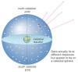
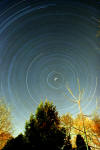
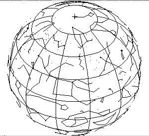
Angular size
- Because the actual size of objects in the sky is impossible to figure
out without a sense of distance, objects in the sky are described in terms
of angular size.
- The Sun and the Moon both have an angular size of about 1/2°.
This coincidence explains why the Moon can completely eclipse the Sun.
- A
fist or palm
at the end of an outstretched arm subtends an angle of about 10°.
- A finger at the end of an outstretched arm subtends
about 1°.
- The angular separation between the
pointer stars at the end of the Big
Dipper's bowl is about 5°.
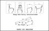
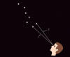
Milky Way
- If you look up into the night sky on a very clear night, in an area with
very little light pollution, you will see a band of stars splashed across
the sky. That band is the plane of the Milky Way Galaxy.
- The center of the Milky Way lies in the direction of the Teapot
(asterism) in Sagittarius. If you are in the Northern Hemisphere, look
southward in the evening. If you are in the Southern Hemisphere, look
overhead.
- The best times to observe the bright galactic center of the Milky Way,
in any part of the world, tends to be from about mid-March through
mid-October, a period sometimes called the “Milky Way Season.” At other
times, the galactic centrer is lost in the Sun's glare.
- The ecliptic plane is tilted about 60°
relative to the Galactic plane (Milky Way).
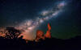
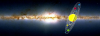
Brightness
- Planets tend to be among the brightest objects in the night sky.
- From Earth, 5 planets are visible to the naked eye: Mercury, Venus,
Mars, Jupiter, and Saturn.
- The planets Uranus, Neptune, and Pluto were not discovered until well
after the invention of the telescope.
- The 7 days of the week are named after the 7 bright 'wanderers' (visible
to the naked eye):
- Jupiter and Venus are brighter than the brightest stars.
- The apparent brightness of planets varies (largely because the distance
between the Earth and the planet changes throughout the year).
- Apparent brightness is often described with the magnitude scale. On this
scale, 6 refers to the dimmest object that the naked eye can see. The
brighter the object, the smaller its magnitude.
Ecliptic plane
- The Earth's orbit about the Sun defines the
ecliptic plane.
- All the planets orbit in nearly the same plane--the ecliptic plane.
- The path of the Sun in the sky defines the edge-on view of the same ecliptic plane.
- As seen from the Earth, the other planets follow paths which are similar
to that followed by the Sun.
- The 12 constellations which lie on the ecliptic are known as the Zodiac.
- All planets in the sky wander across the Zodiac (and never outside it).
Latitude and Longitude
- We can figure out the latitude from the position of any star in the sky
(including the Sun), although the calculation is most straightforward using
the North Star (Polaris).
- Any star will consistently reach the same highest point in the sky and
its height in the sky changes with the observer's latitude.
- In the Northern Hemisphere, the angle between the North Star and the
horizon is the same as the observer's latitude.
- For example, at the Equator, the North Star lies on the horizon and
the latitude is therefore 0°. At the North Pole, the Celestial Pole is
perpendicular to the horizon and the latitude is therefore 90°.
- To calculate your longitude, we need to figure out the time difference
between noon at your location and noon at the Prime Meridian (Greenwich in
the United Kingdom or 0º longitude ). Roughly speaking, one hour of time
difference corresponds to 15° of longitude (360°/24 hours = 15°/hour).
- For example, suppose an observer sees the sun is highest in the sky
(around noon) in Greenwich, England and then travels a great distance.
and notices that the sun is highest in the sky 4 hours later. The
observer then knows he is at longitude 60° W (4 hours ×15°/hour = 60°).
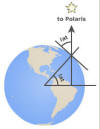
Navigation
- The location and orientation of stars in the sky can be used for
navigation.
- Points on the celestial sphere can be identified with
right ascension and declination, analogous to
longitude and latitude, respectively.
- The units for declination are conventionally degrees, minutes, and
seconds.
- The zero point for declination is the celestial equator, with the North
Celestial pole being +90° with the South
Celestial pole being -90°.
- Any units of angular measure can be used for RA, but it is customarily
measured in hours, minutes, and seconds, with 24 hours being equivalent to a
full circle.
- Since a complete circle has 360 degrees, an hour of right ascension is
equal to 1/24 of this, or 15 degrees of arc, a single minute of RA is equal
to 15 minutes of arc, and a second of RA equal to 15 seconds of arc.
- The zero point for RA is the Vernal Equinox (also called the Aries
Point).
- RA can be used to determine a star's location and to determine how long
it will take for a star to reach a certain point in the sky. For example, if
a star with RA = 01:30:00 is at a location's
meridian,
then a star with RA = 10:00:00 will be in the meridian 8.5 sidereal hours
later.
- Another example: a star on the celestial equator with right
ascension 6 hrs lies 6 hrs x 15 deg/hr = 90 degrees from the Vernal
Equinox.
- This
RA/dec simulation might help with the visualization.
- A star's celestial coordinates (dec and RA) drift very slowly from year
to year due to the effects of precession of the equinoxes and proper motion.
An epoch must therefore be specified as well when identifying a star by its
celestial coordinates. For example, the currently used standard epoch is
J2000.0,
which is
January 1, 2000
at 12:00
TT. The prefix "J" indicates that it is a
Julian epoch.
- As observed from a given latitude, a star which never sets (i.e.,
never disappears below the horizon) due to its proximity to one of the
celestial poles is
known as a circumpolar star. Circumpolar
stars are therefore visible for the entire night on every night of the
year (and would be continuously visible throughout the day too, were they
not overwhelmed by the Sun's glare).
- From the northern latitudes, the Big Dipper is circumpolar, always
above your horizon.
- The Big Dipper and the W-shaped constellation Cassiopeia are
circumpolar for latitudes north of about 35 degrees, as.shown in this
animation.
- This diagram shows the Big
Dipper at midnight at various seasons in our northern sky, with the
“Spring up and Fall down” pattern.
- Polaris (North Star) lies very close to the Celestial North Pole and can be used to
find North in the Northern hemisphere. Polaris remains almost
stationary,
always at the same altitude (angle from the horizon), equal to the latitude
of the observer on Earth.
- Polaris lies on the tail (handle) of the Little Dipper and can be
found by following the line formed by the
pointer stars on the Big Dipper.
- No bright star lies close to the South Celestial Pole, but the
Southern Cross can be used for
navigation in the Southern Hemisphere.
- Sigma Octantis lies within about a degree of the south celestial
pole, but it is barely visible to the naked eye.
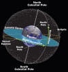
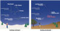
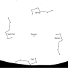
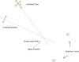
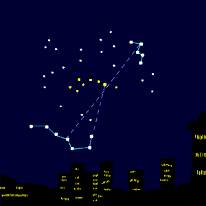
Example: Right ascension and Declination for Sirius
The star Sirius has
celestial coordinates 6 hr 45 min R.A. and -16 degrees 43 minutes declination,
as illustrated in the following figure. This means that when the vernal equinox
is on our celestial meridian, it will be 6 hours and 45 minutes before Sirius
crosses our celestial meridian, and also that Sirius is a little more than 16
degrees South of the Celestial Equator.
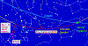
Question: The postage stamp below shows a crescent moon in a starry
night sky. What is wrong with the depiction of the moon in this picture?
Answer: The sun always illuminates the half of the moon facing the sun
(except during lunar eclipses, when the moon passes thru the earth's shadow).
When the sun and moon are on opposite sides of the earth, the moon appears
"full" to us, a bright, round disk. When the moon is between the earth and the
sun, it appears dark, a "new" moon. In between, the moon's illuminated surface
appears to grow (wax) to full, then decreases (wanes) to the next new moon. The
edge of the shadow (the terminator) is always curved, being an oblique view of a
circle, giving the moon its familiar crescent shape. Because the "horns" of the
moon at the ends of the crescent are always facing away from the setting or
rising sun, they always point upward in the night sky. It is fun to watch for
paintings and pictures which show an "impossible moon" with the horns pointed
downwards.
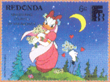
Conjunction and Opposition
- When two or more celestial bodies appear close to each other in the sky,
the objects are said to be in conjunction.
- Conjunction often refers to the inner planets, Mercury or Venus.
- An inferior conjunction occurs when one of the inner planets
(Mercury or Venus) lies directly along the line between Earth and the
Sun.
- A superior conjunction occurs when Earth is in line with a planet on
the other side of the Sun. During both types of conjunctions, Venus and
Mercury rise and set with the Sun.
- While moving on the eastern elongation side, heading towards
conjunction, these planets rise and set in the morning. When located on
the western elongation side, these planets set after the Sun--the period
when Venus is recognized as the evening star.
- Opposition occurs when an outer planet and Earth are closest to each
other, and they are in direct line on the same side of the Sun.
- Opposition only occurs with Earth and the outer planets.
- Opposition is an ideal time to observe planets because they appear
brighter at their closest point to Earth. They are visible throughout
the night, rising around sunset and setting around sunrise.
- During a period of opposition, a planet appears to be in retrograde.
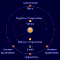
Return to class notes TOC.
Page last modified: